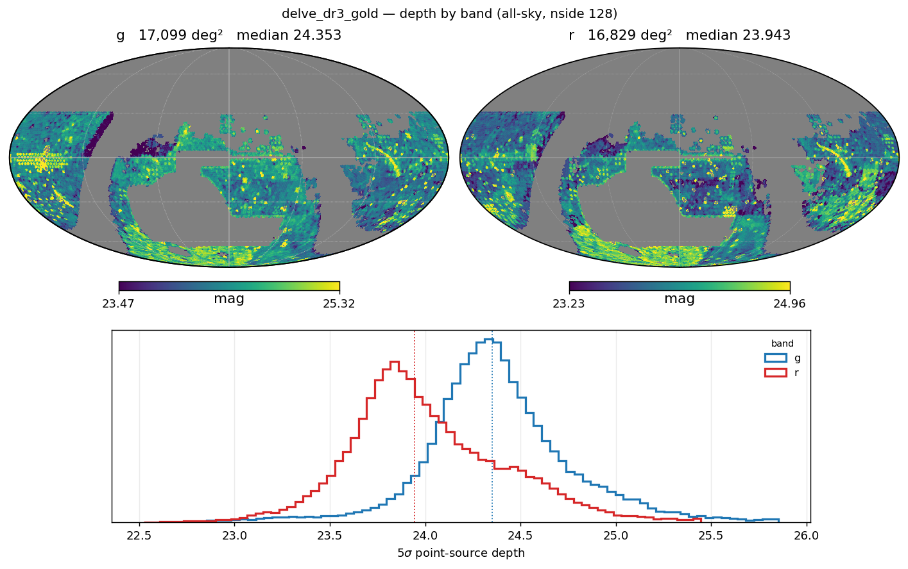
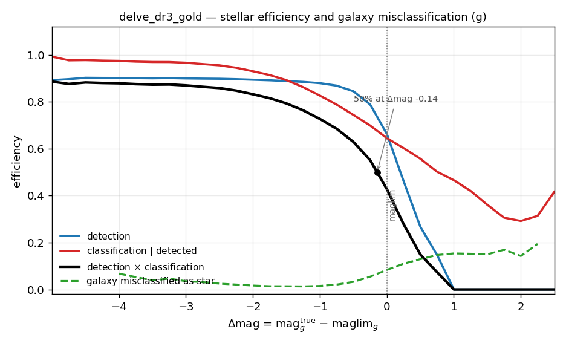
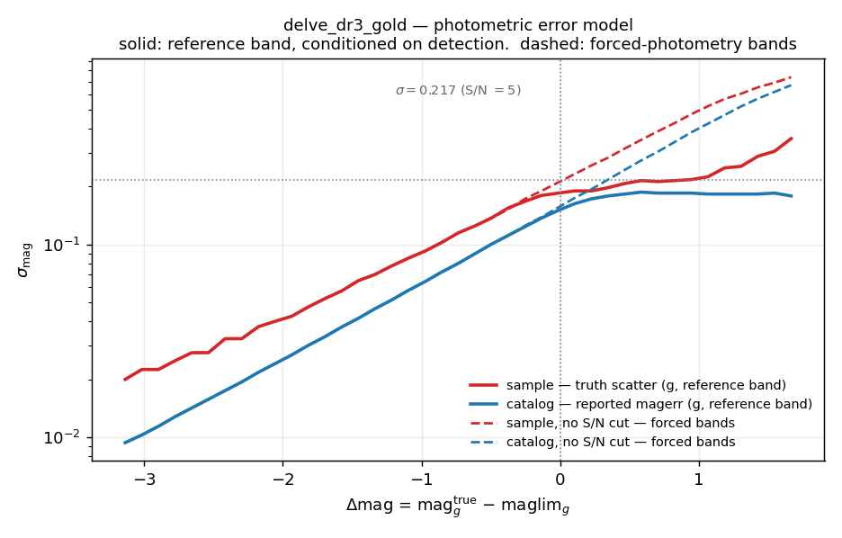

DELVE#
DELVE is supported by StreamObs.
Available releases#
Release |
Bands |
Footprint |
Reference band |
Median reference-band depth |
|---|---|---|---|---|
|
griz |
17,099 deg² (shipped maglim map) |
g |
24.373 |
In the DES footprint, DELVE DR3 Gold is DES Y6 Gold — the two surveys share imaging there — so this release is built to be mutually consistent with DES on that overlap, and the overlap is the primary cross-check (see Validation under Creation below).
Products#
All of the selection-function products are derived from the DELVE Balrog
synthetic-source-injection catalogue (BalrogOfTheStars_Catalog_V4.hdf5,
62,922,015 injected rows) by scripts/des/balrog_selection_function.py --survey delve. The method, the evidence behind each choice and the runbook
are in Selection functions from Balrog (DECam surveys); see Creation below for the
per-release summary. The derivation takes ~35 minutes wall time and ~48 GB
peak RAM on the full V4 catalogue.
File |
Contents |
|---|---|
|
truth-anchored S/N = 5 depth maps |
|
stellar detection + classification efficiency vs |
|
sample photo-error curve — truth scatter, drives the noise draw (reference band) |
|
catalog photo-error curve — reported |
|
sample, no S/N cut — the noise draw for forced-photometry bands |
|
catalog, no S/N cut — reported |
|
fraction of detected true galaxies classified as point sources |
|
pre-afterburner provenance |
|
counts, anchors and convention flags for the run |
Reference band is g. The completeness and photo-error curves are keyed to
delta_mag = mag_true − maglim(pixel) and applied band-independently, so
colour is carried by the per-band depth maps rather than by separate per-band
tables.
Depth and bands#
Truth-anchored medians:
band |
truth-anchored depth |
|---|---|
g |
24.373 |
r |
23.962 |
i |
23.389 |
z |
22.951 |
Footprint of the shipped maglim map is 17,099 deg², at nside 128
(delve_dr3_gold_maglim_{g,r,i,z}_nside128.fits.gz). Each band’s depth is
mosaicked from two input map files (DR3.2 and DR3.1.1+3.1.2), which are
exactly disjoint halves of the footprint (0.00% overlap, 99.76% union); this
is handled internally by the reducer and is transparent to a product user.
The V4 Balrog injects griz only, matching DES Y6, so no u or Y product
is derivable and none is shipped.

The four anchor shifts all share a sign, which is the coherence check that validates the anchor. Medians quoted on the histograms are of the written map, which masks pixels deviating more than 1.5 mag from the band median, so they sit ~0.02 below the anchor values quoted below. The sky map shows the two disjoint DR3 halves that are mosaicked into each band.
Photometric errors#
Four curves ship, not two. The reference band g uses the sample/catalog
pair, which is measured on the detected population, since g’s own photometry
is conditioned on its own detection. Every other band (r, i, z) is forced
photometry — measured at the g position, not conditioned on its own detection
— and uses the _nocut pair instead.
Survey.get_photo_error(band=...) picks the matching pair automatically and
raises rather than guessing if the required curve for a non-reference band
is not loaded, instead of silently applying the detected-population curve to
forced photometry.
Using it in streamobs#
Configured by config/surveys/delve_dr3_gold.yaml, data in
data/surveys/delve_dr3_gold/:
from streamobs.surveys import SurveyFactory
survey = SurveyFactory.create_survey(
"delve",
release="dr3_gold"
)
maglim = survey.get_maglim("g", pixel=pix)
completeness = survey.get_completeness(
"g",
mag,
maglim
)
photo_error = survey.get_photo_error(
"g",
mag,
maglim
)
For a forced-photometry band, pass that band to get_photo_error (e.g.
survey.get_photo_error("r", mag, maglim)) — it automatically resolves to the
_nocut curve rather than the reference-band curve.
Caveats#
EXT_XGB— what a real DR3 Gold user would actually cut on — cannot be evaluated on Balrog, for the same reason as DES Y6 (App. A.2 of Bechtol et al. 2025): the required features are never measured for injected sources. DELVE shipsbdf_extended_class_dr3goldinstead, which is exactly reproducible fromBDF_T/BDF_S2Nbut is a different selection from anEXT_XGBcut. DES handles this gap with a trained surrogate plus deconvolution; no equivalent surrogate is shipped for DELVE.There is no external validation of the DELVE star classification comparable to the SPLASH-SXDF check done for DES. (That check validated completeness but could not measure contamination either — see DES.)
Galaxy misclassification is noise-dominated brightward of
delta_mag ≈ −4. The true-galaxy counts per bin get small there and the rate swings wildly; treat the curve as reliable only faintward of that.The efficiency table starts shallower on the bright side than DES’s. DELVE’s table begins at
delta_mag = −5.0(mag_g= 19.375), 3.4 mag shallower than DES’s−8.4(mag_g= 16.625). Stars brighter thang ≈ 19.4are held flat at the table’s brightest value (detection_eff = 0.90) by streamobs’ bright-edge hold — treat completeness for very bright stars as indicative rather than measured.
Creation#
How the injections work#
The selection-function products are derived from the DELVE Balrog
synthetic-source-injection catalogue (BalrogOfTheStars_Catalog_V4.hdf5,
62,922,015 injected rows) by scripts/des/balrog_selection_function.py --survey delve. The method, the evidence behind each choice and the full
runbook are in Selection functions from Balrog (DECam surveys); this page carries only
the per-release summary. The derivation takes ~35 minutes wall time and ~48 GB
peak RAM on the full V4 catalogue.
Regenerate the figures on this page with
python scripts/des/build_delve_survey_doc_figs.py. There is deliberately no
surrogate-confusion figure and no external-validation figure, unlike
DES: DELVE needs no EXT_XGB surrogate, and no SPLASH-equivalent truth
catalogue overlaps the footprint.
Depth-map derivation#
The shift applied to each input map:
band |
input map median |
truth-anchored |
shift |
|---|---|---|---|
g |
24.178 |
24.373 |
+0.196 |
r |
23.675 |
23.962 |
+0.287 |
i |
23.204 |
23.389 |
+0.185 |
z |
22.560 |
22.951 |
+0.391 |
Each band’s depth is mosaicked from two input map files (DR3.2 and DR3.1.1+3.1.2), which are exactly disjoint halves of the footprint (0.00% overlap, 99.76% union); passing only one silently drops ~half the injections and produces an all-zero efficiency table. See Selection functions from Balrog (DECam surveys) for the mosaicking details.
The shifts are smooth and all the same sign — the coherence check that validates the anchor, same as DES. Unlike DES, whose shifts are all negative, DELVE’s are all positive: the input maps are slightly optimistic relative to what the injections actually recover.
Pixels deviating more than 1.5 mag from their band median are masked when the maps are written: g 29,872 (0.60%), r 49,822 (1.02%), i 30,806 (0.63%), z 25,535 (0.51%).
Star/galaxy classification#
classification_eff describes the bdf_extended_class_dr3gold, 0 ≤ EXT ≤
1 selection. Unlike DES this needs no surrogate, no deconvolution and no
deep-field truth join: bdf_extended_class_dr3gold needs only BDF_T and
BDF_S2N, both of which are measured for injections, and truth labels come
from truth_STAR, which ships per row. The classifier reuses the DES Y6
Gold interpolation nodes, so DES and DELVE are classified identically — that
is what makes the two releases comparable in delta_mag space.
Counts behind the curve: 13,141,646 true stars binned; 8,361,275 detected
(63.6%); 7,140,687 classified (85.4% of detected). The bright-end detection
plateau sits at 0.901, and the combined (classification × detection)
efficiency crosses 50% at delta_mag = −0.144. The efficiency table spans
delta_mag = −5.0 to +2.5 (mag_g 19.375 to 26.875), 31 rows.
As of 2026-09-04, the V4 catalogue also carries a persisted
bdf_extended_class_dr3gold int8 column, computed by the same vendored
function the reducer uses, with provenance recorded in the dataset attrs.
Values run 0–4 plus a −9 sentinel; the distribution is 32.2% point source
(0–1), 30.3% extended (2–4), 37.5% sentinel — the sentinel fraction is
dominated by the ~21% undetected injections, whose meas_bdf_* fields are all
0.0 and so fail the s2n > 0 test.

Stellar detection and classification efficiency for the
0 ≤ bdf_extended_class_dr3gold ≤ 1 selection, with the galaxy
misclassification rate on the same axes. The bright-end detection plateau sits
at 0.901 rather than near unity because the per-object quality flags
(meas_flags, meas_bdf_flags) are applied in the efficiency numerator — the
Roman/LSST convention. The shaded region marks where the misclassification
curve is noise-dominated; see Caveats.
Photometric-error derivation#
The sample/catalog pair is measured on the detected population and applies
to the reference band g. The _nocut pair is measured without the
reference-band S/N cut and applies to r, i and z, which are forced at the g
position and so are not conditioned on their own detection.
The two pairs are identical brightward of the depth (22 bins agree to
within 1e-6) and diverge only faintward, where the S/N cut truncates the
detected sample: its measured scatter turns over and falls while the
_nocut curve keeps rising, up to 0.38 dex apart. Using the detected
curve for forced photometry would understate faint-band errors.
Per-tile zero points were measured for 1,499 tiles (reference offset +0.0225,
spread (16–84)/2 = 0.1758). 329 tiles deviated by more than 0.05 mag and were
rejected, not corrected — matching DES’s own treatment of this class of
artifact — dropping 8,503,446 of the 62,922,015 injected rows. Rejecting
rather than correcting improved the error-inflation factor (truth scatter /
reported error) from 2.00 to 1.50; the shipped value is 1.502. Because the
curves are delta_mag-keyed and the imaging is homogeneous within the survey,
they extrapolate to the full footprint — the maglim maps ship unmasked.
The bright-end cut removes bins with delta_mag < −3.25 (23 of 64 raw bins,
leaving 41). The truth-scatter histogram has 0.005 mag bins, so a binned sigma
can only take multiples of 0.0025; brightward of delta_mag ≈ −3.26 the curve
is pinned to that grid and reports the bin width rather than the scatter. The
first bin reaching sigma = 0.020 — the same floor the cleaned DES curve has
— is delta_mag = −3.256. See
scripts/des/delve_photoerror_corrections.yaml for the full rationale.
The cleaned curve floors at 0.020 mag, which makes sys_error: 0.005 safe
(3.1% in quadrature) — exactly as for DES.

All four photo-error curves. Solid is the detected-population pair used for the
reference band g; dashed is the _nocut pair used for the forced-photometry
bands r, i and z. They agree brightward of the depth and separate only
faintward, where the S/N cut truncates the detected sample and its measured
scatter turns over rather than continuing to rise. The lower panel is the
error-inflation factor, ~1.5 near the limit.
Validation#
Since DELVE DR3 Gold is DES Y6 Gold in the DES footprint, comparing the two
releases in delta_mag space is the primary validation for this release — it
needs no sky overlap, unlike a positional cross-match. Over
−4 < delta_mag < 0:
the combined efficiency curves agree to a median absolute difference of 0.063 (max 0.292);
the photo-error curves agree to 0.020 dex.
Derivation-level limitations#
classification_effturns up faintward ofdelta_mag ≈ 1.75(0.29 → 0.42 by 2.5). This is small-N noise, and is harmless because the faint clamp (DET_EFF_DELTA_MAX = 1.0) zeroesdetection_effandclassification_detection_efffordelta_mag > 1regardless.
Questions about these files can be addressed to Peter Ferguson.